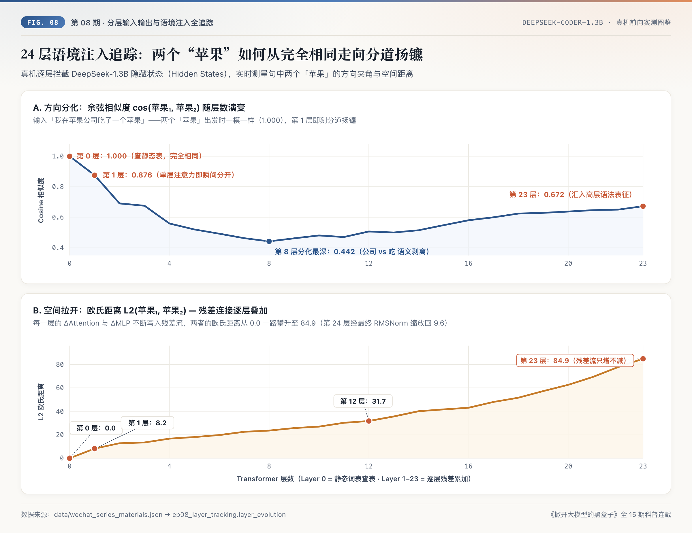

词语接龙的灵魂：每一层如何把前文语境“注入”当前词？（分层输入输出全追踪）
- 攻克 Transformer 的“分层学习法”：学习大模型架构绝不能对着一张笼统的框图“看个大概”。最硬核的破局之道，是紧盯每一层输入的张量是什么形状、内部做了哪几步线性与非线性变换、输出的张量又变成了什么。
- 进出同形的“语义流水线”：在 DeepSeek 1.3B 的 24 层网络中，每一层输入和输出的张量形状永远严丝合缝地保持为
[1, 6, 2048]。形状不变，但每个词向量内部的数值完成了一次脱胎换骨的“语境更新”。 - 词语接龙的灵魂是“语境注入”：接龙不是机械查表，而是每一层都把前面所有 Token 的语境信息按相关性提取出来，注入并融汇到当前 Token 自己的向量里。
- 24 层分道扬镳实测：在“我在苹果公司吃了一个苹果”中，两个“苹果”在 Layer 0 查表时余弦相似度为
1.0000（L2 距离0.000）；经第 1 层语境注入后降至0.8588（原始态0.8757）；走完第 24 层后跌至0.5795（空间距离拉大至26.597），彻底化为两个不同的语义实体！
一、 拒绝“看个大概”：用“分层输入输出追踪法”拆解黑盒
初学者第一次看到 Transformer 架构图时，常被残差连接、多头注意力、前馈网络绕得头晕目眩。为什么觉得难？因为静态框图没有告诉你张量在里面是怎么变形的。
我们在第 1 期立下总体观：大模型是一个 24 层复合函数 Y = F24(F23(⋯ F1(X)))。要学透它，只需掌握一条黄金法则——“分层学习法”（紧盯输入与输出）：
只要扒透第 1 层（代码里为 Layer 0），剩下的第 2~24 层不过是用完全相同的图纸、换 23 套权重矩阵接力加工而已！
底层思想提炼：紧盯张量形状的“分层学习法”。再复杂的神经网络也是一条严密的张量流水线。顺着数据流把每一步的 [输入形状 -> 变换性质 -> 输出形状] 列成清单，黑盒迷雾便会瞬间消散。
二、 钻进第 1 层内部：6 个词元的 7 步张量变形全追踪
把例句“我在苹果公司吃了一个苹果”喂给本地 deepseek-coder-1.3b-base，分词器将其切为 6 个 Token：[①我在(23098), ②苹果₁(17144), ③公司(2804), ④吃(3509), ⑤了一个(13556), ⑥苹果₂(17144)]。
刚查表出来时，2 号位“苹果₁”与 6 号位“苹果₂”编号都是 17144，因此它们的 2048 维初始向量 100% 相同（模长均为 8.07，余弦相似度 1.0000）。接下来，形状为 [1, 6, 2048] 的张量踏入第 1 层，我们用探针记录下它在层内 7 个步骤的完整变形表：
| 层内步骤 | 数学变换性质 | 输入张量形状 | 核心权重形状 | 输出张量形状 | 两“苹果”模长与相似度 | 这一步究竟在干什么？（物理与几何意义） |
|---|---|---|---|---|---|---|
0. 词表查表 (Embedding) | 查表映射 | [1, 6] | [32256, 2048] | [1, 6, 2048] | 8.07 / 8.07cos = 1.0000 | 把 6 个词编号变成 6 条 2048 维初始向量（此时两个“苹果”完全克隆） |
1. 层归一化 (RMSNorm) | 非线性缩放+线性微调 | [1, 6, 2048] | [2048] | [1, 6, 2048] | 6.61 / 6.61cos = 1.0000 | 把每条向量长度校准到统一量级，防止多层计算数值爆炸 |
| 2. Q/K/V 线性投影 | 纯线性变换 (拉伸+旋转) | [1, 6, 2048] | 3 × [2048, 2048] | Q,K,V 各 [1, 6, 2048] | 54.66 / 54.66cos = 1.0000 | 旋转投影出三种分身：找人的问题(Q)、被找的标签(K)、携带的干货(V) |
3. 切分 16 头 + RoPE 旋转 | 维度重排 + 几何旋转 | [1, 6, 2048] | 无参数 (位置旋转角) | [1, 16, 6, 128] | 模长 54.66按位置旋转分离 | 把 2048 维劈成 16 个 128 维独立视角，并按词的位置序号（2号 vs 6号）旋转不同角度 |
4. 注意力打分与 Softmax | 点积 + 非线性(Softmax) | Q,K: [1, 16, 6, 128] | 因果掩码 (上三角 −∞) | [1, 16, 6, 6] | 行概率和 = 1.00 关注视野不同 | 算点积并经 Softmax 变成概率：算出前文每个词对当前词的影响权重 |
| 5. 语境注入 + 残差相加 | 线性组合 + o_proj 投影 | [1,16,6,6] × V | W_o: [2048, 2048] | [1, 6, 2048] | 前文语境已注入 开始分道扬镳 | 把 16 个头提取的前文干货 V 汇总，经残差连接（+ 原输入）直接注入当前词体内 |
6. SwiGLU 前馈网络 (MLP) | 线性升维 → SiLU 非线性 → 线性降维 | [1, 6, 2048] → [1, 6, 5504] | up/gate [2048,5504]down [5504,2048] | [1, 6, 2048](第1层最终输出) | 16.72 vs 15.92cos = 0.8588 ( 0.8757) | 在 5504 维高维空间做 SiLU 非线性知识加工，压回 2048 维输出第 1 层崭新张量！ |
看懂这张表，你就看懂了层内两大核心模块的分工：
29.90%，约 4.03 亿参数）——负责“收集前文，注入语境”：因为因果掩码只准往前看，2 号位“苹果₁”只能看到 [我在]；而 6 号位“苹果₂”却能看到 [我在, 苹果₁, 公司, 吃, 了一个]！在 Step 4~5 中，“苹果₂”用问题向量 Q 与前文标签向量 K 做点积，经 Softmax 化为概率权重后，把前文“吃”、“公司”的干货向量 V 按比例抽取出来，直接加（注入）到了“苹果₂”自己身上！60.28%，约 8.12 亿参数）——负责“闭关消化知识”：把刚注入语境的 2048 维向量线性升维到 5504 维，用 SiLU 非线性激活激发常识（“前面注入了‘吃’，那我是水果”），再降维回 2048 维交给下一层。三、 24 层语境注入全追踪：两个“苹果”如何一步步分道扬镳？
第 1 层结束后，两个“苹果”的相似度从 1.0000 降到了 0.8588（未去均值原始态为 0.8757）。当 [1, 6, 2048] 的张量继续穿过第 2 层直至第 24 层时，每一层都在做更深度的“语境接力注入”。我们实测提取了从 Layer 0 到 Layer 24 两个“苹果”的模长、空间距离（L2）与余弦相似度轨迹：
| 网络层深度 | 输出张量形状 | “苹果₁”模长 | “苹果₂”模长 | 两“苹果”空间距离 (L2) | 两“苹果”余弦相似度 (cos θ) | 24 层语境注入的递进阶段解析 |
|---|---|---|---|---|---|---|
| Layer 0 (初始查表) | [1, 6, 2048] | 8.070 | 8.070 | 0.000 | 1.0000 | 双胞胎起点：刚查表出来，毫无上下文，100% 重合 |
| Layer 1 (第 1 层后) | [1, 6, 2048] | 16.723 | 15.917 | 8.175 | 0.8588 (原始 0.8757) | 初次分化：“苹果₂”首次注入“吃/公司”语境，迅速拉开夹角 |
| Layer 2 (第 2 层后) | [1, 6, 2048] | 16.955 | 15.380 | 12.803 | 0.6904 | 句法锁死：多头注意力锁死动宾搭配，相似度陡降 |
| Layer 4 (第 4 层后) | [1, 6, 2048] | 18.954 | 16.263 | 16.704 | 0.5592 | 语义剥离：前一个绑定地点状语，后一个绑定食物宾语 |
| Layer 8 (第 8 层后) | [1, 6, 2048] | 23.598 | 20.794 | 23.576 | 0.4417 | 消歧谷底：浅中层词义消歧完成，夹角扩大至近 64° |
| Layer 12 (第 12 层后) | [1, 6, 2048] | 32.721 | 31.113 | 31.732 | 0.5067 | 中层全局融汇：全句背景共享，残差流模长突破 30 |
| Layer 16 (第 16 层后) | [1, 6, 2048] | 47.963 | 45.890 | 43.036 | 0.5802 | 深层预测准备：向量重心转向“下一个词该猜什么” |
| Layer 20 (第 20 层后) | [1, 6, 2048] | 75.604 | 71.099 | 62.610 | 0.6373 | 高层特征爆发：模长突破 70，空间距离拉大至 62.61 |
| Layer 23 (第 23 层后) | [1, 6, 2048] | 106.352 | 103.140 | 84.870 | 0.6721 | 临门一脚：残差累积模长破百，绝对距离高达 84.87 |
| Layer 24 (最终输出) | [1, 6, 2048] | 17.992 | 18.202 | 26.597 (校准后 9.614) | 0.5795 (原始 0.8590) | 终局定格：经最终归一化校准，彻底化为两个不同语义实体！ |

四、 从双胞胎到陌路人：看懂 24 层曲线背后的三阶段接力
仔细端详上面这张 24 层实测演进表与曲线，你会发现两个“苹果”的分化经历了三个清晰的阶段：
1.0000 骤降至 0.8588 再到 0.5592。此时模型快速完成了局部句法绑定——前一个“苹果₁”与“公司”粘合，后一个“苹果₂”注入了动词“吃”的营养。0.4417，夹角近 64°），两个词的多义性被彻底剥离。0.5795、空间欧氏距离 26.597（校准态 9.614），各自携带截然不同的下文预测使命出炉！底层思想提炼：词语接龙的本质是“层层递进的语境融汇”。大模型靠着 24 层网络不断把前文信息抽取并注入当前词，让原本重合的两个“苹果”在 2048 维空间走出截然不同的轨迹。走完第 24 层时，句尾的“苹果₂”已浓缩了整句话的来龙去脉，成为预测下一词的全句代表！
2014 年蒙特利尔，巴达瑙如何打破“长句遗忘魔咒”？
2014 年之前，机器翻译被困在“固定向量瓶颈”里：旧式的循环神经网络（RNN）读长句子时，必须把整句 50 个词的信息硬塞进最后一个固定向量里，导致句子一长就“读了后面忘前面”。
2014 年冬天，加拿大蒙特利尔大学博士生兹米特里·巴达瑙（Dzmitry Bahdanau）与曹均铉（Kyunghyun Cho）、导师约书亚·本吉奥（Yoshua Bengio）提出了一个精妙直觉：人类翻译长句时，每写一个词都会回头扫视原文最相关的词！ 他们不再把整句话压成一个死向量，而是让当前词对前文所有词打分、经 Softmax 算出权重后把前文语境动态注入当前词，并命名为注意力机制（Attention），为 3 年后的 Transformer 埋下了最关键的火种。
在第 1 层追踪表的 Step 3 里，为什么模型非要把 2048 维劈成 16 个 128 维的小分队（16 个注意力头）？如果把第 1 层的 16 个注意力头实测数据全表摊开，究竟是哪一个头在盯紧动词“吃”，又是哪一个头在锁死“苹果公司”？下一期，真机 16 头实测全表大放送！
- The Illustrated Transformer（Jay Alammar 图解教程）：配合本期 7 步张量表阅读，彻底看清 Q/K/V 流转。
- Transformer Explainer（
poloclub.github.io/transformer-explainer/）：在浏览器里实时观察每一层张量形状与数值变化。 - 动手实验：用 PyTorch 的
register_forward_hook提取 DeepSeek 1.3B 各层输出，复现两个“苹果”的分道扬镳曲线！
deepseek-coder-1.3b-base（32,256 词表 · 24 层 · 13.46 亿参数）真机前向实测生成。